Energy & Utilities · system design
Turbine Island Watch: Condition Monitoring and Diagnostics for a Combined Cycle Plant in Pakistan
We designed a steam turbine condition monitoring system for a rehabilitated 280 MW turbine-generator at a combined cycle plant in Pakistan. The platform reads the DCS, the vibration rack and the generator protection systems through a one-way path, ranks anomalies into prescribed actions, and runs entirely on the operator's own hardware. This post explains it mechanism by mechanism.
Condition Monitoring and Diagnostics for a Combined Cycle Plant in Pakistan
What this is. An open reference architecture for system design in physical AI. A condition monitoring and diagnostics platform for a rehabilitated 280 MW hydrogen-cooled steam turbine generator at a combined cycle plant in Pakistan: it reads the DCS, the vibration monitoring rack and the generator protection systems through a one-way path, ranks anomalies into prescribed actions for the shift operator, and runs entirely on the operator's own hardware. It is written for the plant's condition monitoring engineer and shift operators, the contractor's warranty engineer, and the OT and data engineers who would build and run it. The operator is described by class, never by name.
The answer in numbers.
| Part | The design |
|---|---|
| Sources | Eight named plant systems (DCS, the 3500 vibration monitoring rack, generator condition monitoring systems, document management, the programme schedule, the plant CMMS or EAM, SCADA, outage management) entering through four adapter families over a one-way OPC UA read |
| Object model | 10 typed objects, from the steam turbine and the new generator through the vibration rack to the condition anomaly alert, work order, calibration and test records and the people who act, published as JSON for reuse |
| Models | MOMENT-1 (MIT) for zero-shot anomaly detection over vibration, hydrogen, winding and process telemetry; IBM Granite 4.2 8B (Apache-2.0) for diagnostic notes and test-report drafts; no training run |
| Compute | One 48 GB PCIe inference GPU class card on ruggedised edge servers inside the plant perimeter, a PTP grandmaster time card and a one-way egress path; no cloud, because Pakistan has no hyperscaler region |
| Rollout | Three gated phases carrying 15 scope items, with a gate of 2 false alerts per week and thresholds tuned only on channels with provable history |
| Three-year cost | About 22,500 US dollars to own the site envelope over three years (21,600 to 23,400), about the same as the deepest three-year AWS commitment for one L40S card in the UAE region, which could not keep the read one-way in any case (Appendix A) |
| Human control | The platform advises and the protection layer trips: every alert carries a prescribed action a named shift operator acknowledges, and nothing writes to the DCS |
Reuse it. The object model, the model register and the figures are free to reuse under CC BY 4.0. Cite as DOI https://doi.org/10.5281/zenodo.23365092.
Made with. Reasoned on [CodeNinja Praxis](https://codeatoms.ai/praxis/), the CodeNinja Atoms platform for designing physical AI systems. The object model imports into [Hyper Ontology](https://codeatoms.ai/hyper-ontology/), which turns it into a living system. Both are in beta; access by request.
Introduction
STG-1 sits inside a combined cycle plant, feeding a 280 MW steam turbine generator cooled by hydrogen at 20 kV, protected by a rehabilitated 3500 vibration monitoring rack on the turbine bearings, and operated from a shift desk where process, alarm and vibration context arrive through the plant's distributed control system. When a bearing housing runs at its nominal 2.3 mm/s RMS, the protection layer is quiet and the shift operator's attention is elsewhere. An industry analysis of steam turbine condition monitoring puts the cost of a single unplanned outage at more than half a million dollars per incident, which is the arithmetic that makes bearing vibration worth watching continuously rather than at the trip threshold of 6.21 mm/s RMS in Zone C.
We set out to design a steam turbine condition monitoring system and a power plant predictive maintenance platform around that rehabilitated machine, for a grid-connected generation company in Pakistan. The constraints were fixed before we started. Every tier runs on the operator's own hardware inside the plant perimeter, because Pakistan has no hyperscaler region and no managed cloud is assumed anywhere. The NEPRA Security of IT and OT Regulations 2022 bind the design to domain separation, least privilege and five years of tamper-evident logs. The platform reads the upgraded DCS and never writes to it, the existing trip philosophy is preserved, and the models are pretrained open weights requiring no training run. The plant sits roughly 600 km from the port, so spares and model updates arrive on the site's own import cycle, and the design treats that as a constraint rather than an afterthought.
This blog describes the operation as an engineer who has never seen the plant needs to see it, the technical problem the existing instrumentation cannot solve alone, the layered architecture from surfaces to sources, the ontology of 10 objects that grounds every alert, the ingestion path through 4 adapter families from 8 named systems, the inference workflow from vibration reading to severity-ranked alert to condition work order, the two open-weight models and why each was chosen, and the delivery phases with the gates the design sets for itself.
Background: how this operation runs
The plant is a combined cycle site. Steam turbine STG-1 is under rehabilitation, together with its foundation and allied equipment, and the rehabilitation delivers a new steam turbine generator rated 280 MW at 20 kV, hydrogen-cooled, connected through an SF6 generator circuit breaker at 23 kV and an isolated phase busbar rated 20 kV and 10000 A. Main and auxiliary transformers carry the output to the switchyard. Gas turbines GT-1 and GT-2 continue in simple cycle, undisturbed by the works. The vibration instrumentation is a 3500 rack on the STG-1 and STG bearings, and fire detection instruments cover the turbine bearing areas to NFPA 850. Hydrogen leakage detectors and a rotor winding short-circuit on-line detection device come with the new generator.
The people are the employer's operational personnel, led on the floor by the shift operator, and the contractor's warranty engineer, who carries defect liability period obligations and reviews evidence through the contract's document management system. Monthly reporting reconciles against the Primavera P6 programme that governs the contract schedule. Field crews work in the plant's maintenance system of record, a plant CMMS or EAM that is domain-typical rather than named in the requirement, and which the design treats as to be confirmed.
The systems already running are the upgraded DCS delivered under the EPC, the rehabilitated 3500 rack, the generator condition monitoring systems, and the contract DCS and document systems of record. Five cameras watch the site: wide views over the plant switchyard and the STG-1 island transformer yard, close views of the electronic room DCS cabinet and the switchyard permit-to-work barrier line, and a control view over the STG-1 shift operator desk. Figure 1 shows the customer's world and the platform's boundary, with 8 named systems feeding it, 4 roles working it, and 7 of the 10 places the plan staged sitting under it. Figure 2 shows the simulation at steady state drawn on the site's own terrain, every staged asset watched continuously, with STG-1 bearing housing vibration running at its nominal 2.3 mm/s RMS.
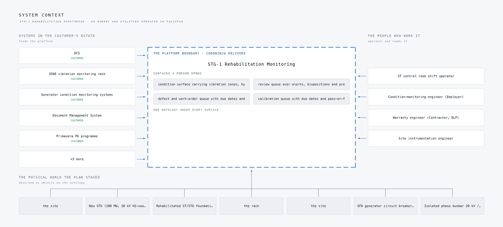
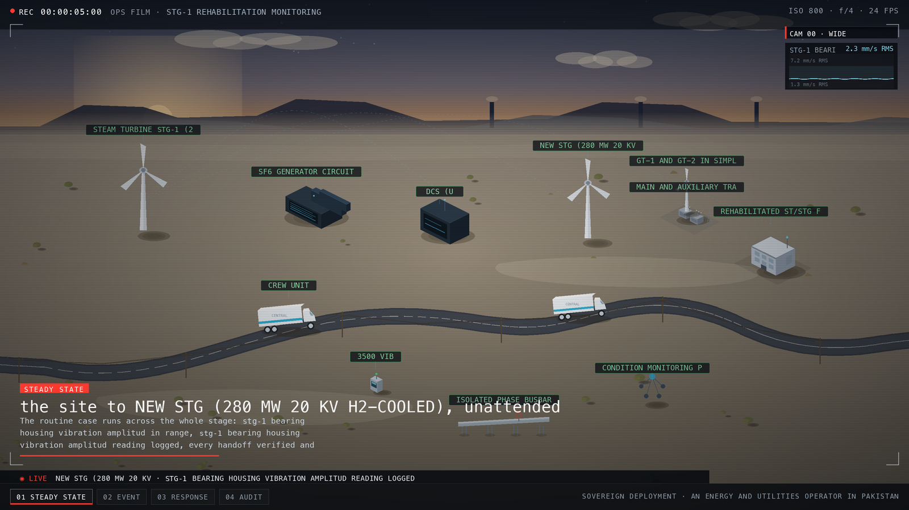
The problem
Each existing system answers a narrow question, and none of them answers the question that matters. The upgraded DCS holds process, alarm and vibration context, but its alarm philosophy is built around the existing trip logic, so it speaks when the machine is already lost. The 3500 rack measures bearing vibration channels on STG-1 and the STG bearings, which makes it the primary instrument for the bearing failure modes the plant cares about, yet a rack delivers channels, not diagnoses, and its protection role ends at the Zone C trip. The generator's rotor winding short-circuit on-line detection device and the hydrogen leakage detectors each watch one fault class in isolation. Rotor winding fault detection works by sensing the electrical signature of inter-turn shorts on line, and hydrogen leakage detection works by gas sensing around the generator casing, but neither reading is correlated with bearing vibration or process conditions anywhere in the current stack.
What no system sees together is the trajectory. A bearing that trends from 2.3 mm/s RMS toward the 6.21 mm/s RMS Zone C boundary passes through weeks of readable evidence, and none of the present instruments assemble that evidence into a single, unit-checked history per channel. Threshold tuning is made harder by the possibility that recovered pre-fire condition history is too sparse to baseline on, which the design answers by stating recovered-versus-fresh per channel and tuning only on channels with provable history. The official investigation into the 2021 failure at CS Energy's Callide C4 unit found that a piece of rotor shaft weighing more than two tonnes was thrown five metres across the turbine hall, which is the failure mode that unwatched trend evidence ends in.
The practical cost is that anomalies surface as alarms without prescribed actions, the warranty engineer reviews evidence that lives in parallel registers rather than the DMS, and the operator has no way to distinguish a sick machine from a sick instrument, because channel health is not separated from process alarms anywhere.
Design goals
The design puts four goals on the platform, each tied to a specific failure mode at the combined cycle plant. The first is protection without interference: the platform reads the upgraded DCS, the rehabilitated 3500 vibration monitoring rack, and the new generator's rotor-winding detection and hydrogen-leakage systems, and it never writes to any of them, because the existing trip philosophy is preserved and the DCS read path must not degrade plant operations.
The second is detection ahead of the trip. On STG-1 bearing housings the design watches vibration in mm/s RMS, with 2.3 mm/s RMS as the steady-state reading and a breach defined as an excursion above it toward the Zone C condition that forces a turbine trip, recorded at 6.21 mm/s RMS in the staged scenario. Detection has to run on anomaly detection over vibration, hydrogen, winding and process telemetry, not on thresholds alone, because the rehabilitated unit's recovered history may be too sparse to baseline every channel.
The third is alert discipline. Alert flooding trains operators to ignore a platform, so the plan puts a phase gate of 2 false alerts per week, curates every series into unit-checked form, and separates channel health from process alarms on the operator surface.
The fourth is compliance from the first week. NEPRA Security of IT and OT Regulations 2022 bind a grid-connected generation company, so the design runs domain separation, least privilege, five years of tamper-evident logs and the quarterly PowerCERT reporting schedule from phase one rather than retrofitting an audit trail later.
Scoping decisions that de-risked the design
Three decisions were taken early, and each one bought safety at a price we accepted. The first was the OT boundary: a hardware one-way egress path with a DMZ OPC UA collector instead of a direct control-network connection, with a signed zone-and-conduit diagram as a phase one deliverable. The cost is that the platform is structurally incapable of commanding the DCS, so every action it produces must land with a person, through the shift operator's alerts and the engineer's review queue, and the freshness of DCS context depends on the read cadence rather than on a live bidirectional link.
The second was to commit to pretrained open-weight models with no training run at all. The cost is that we cannot tune to this unit's specific signature: phase two thresholds tune only on channels with provable recovered history, and the migration report states recovered-versus-fresh per channel so nobody baselines on air.
The third was to fix every tier to the operator's own hardware inside the plant perimeter, since Pakistan has no hyperscaler region and no managed cloud service is assumed anywhere. The cost is operational: spares and model updates arrive on the site's own import cycle roughly 600 km from the port region, so the design runs mirror-archive delivery as its unit of change control and sizes spares for a long import gap.
What we chose against
The decisions in this design were mostly made against named alternatives, and the reasoning matters as much as the choices themselves. On the model tier, the anomaly role went to MOMENT-1, an MIT-licensed open time-series foundation model that detects and classifies anomalies zero-shot from one weights set, because this design needs anomaly detection rather than forecasting alone; the Apache forecasters on the table were ruled out for exactly that reason. On the drafting role, IBM Granite 4.2 8B under Apache-2.0 was chosen over Qwen3.8 to 27B as the smaller, licence-clean fit with real KV headroom on a 48 GB-class site card.
Two larger shapes were ruled out wholesale. A managed cloud architecture was ruled out because Pakistan has no hyperscaler region, so the design runs entirely on plant hardware. A direct control-network connection to the DCS was ruled out because it degrades plant operations if it fails.
Out of scope entirely: the agentic work surface is offered, not committed, pending the engineer's confirmation, and integration with the plant CMMS or EAM stays unconfirmed with no price weight until it is. Neither is a gap, because the alert and work-order path is complete without them and both can be added once confirmed. The table below sets out each option, the decision taken, and the reason this operation ruled it out.
| Where | What we picked | Instead of | Why here |
|---|---|---|---|
| Monitoring platform | Red Hat AI delivered disconnected hardware | Databricks or Confluent managed lakehouse/streaming | Every managed option either has no Pakistan region or moves condition data outside the perimeter the engineer fixed. |
| DCS integration | Read-only OPC UA through a DMZ collector behind a hardware one-way egress path | Direct platform connection into the control network | The sector's own pitfall P1 and the NEPRA IT/OT rules forbid a live bidirectional path into the control network for an analytics layer. |
| Scope | Not built | No automatic trip or protection logic in the platform | The existing control philosophy is preserved unless the operator approves a change, so the platform advises and the protection layer trips. |
| Scope | Not built | No cameras, video analytics or people tracking | Fire, hydrogen and vibration duties are instrumented systems inside the EPC scope; this design claims no vision capability the requirement does not ask for. |
| Scope | Not built | No fine-tuning of models on plant data in phase one | The platform improves by engineer-confirmed labels and memory, not a training run on recovered-and-partial history; later supervised training requires the history-retention answer first. |
From the 3500 rack to the shift desk
The mechanism this platform exists for is a single path: plant signals, curated series, severity-ranked alerts, prescribed actions, and a written-back record. Figure 3 shows the whole system top to bottom, from the surfaces the operator's people open, through the agents and the loop, down to the models and inference and the system of context and ingestion underneath.
Figure 4 shows the same system as a layered stack: 8 named sources, including the upgraded DCS, the rehabilitated 3500 vibration monitoring rack, the generator winding and hydrogen-leakage systems, the contract-required Document Management System, the Primavera P6 programme and the plant CMMS, feed 4 adapters, which map into an ontology core of 10 objects taken from the object model this engagement builds, grounding 8 services that reach 4 surfaces. The adapters are where provenance is settled: customer-named systems and domain-typical ones carry different confidence, and the integration map prints that class per row.
Two disciplines hold the path together. A PTP grandmaster gives every tier the specification's common time reference, so a vibration reading, a DCS process channel and a camera frame can be judged against one clock. And because the DCS read is one-way, the platform's own failure would otherwise be invisible, so the operator surface carries positive heartbeat, a freshness indicator and tested degraded modes.
The stage table underneath traces the staged scenario this design must carry end to end, from steady state through the Zone C excursion to the recovery and audit, and Figure 3 is the component picture that executes it.
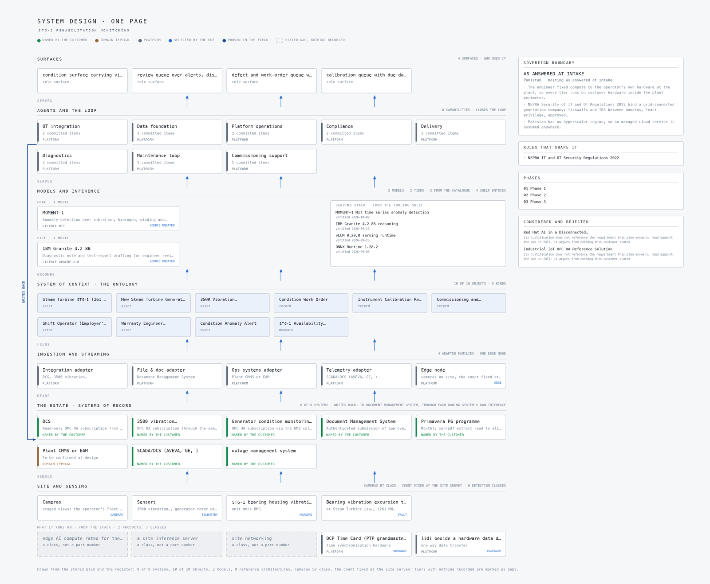
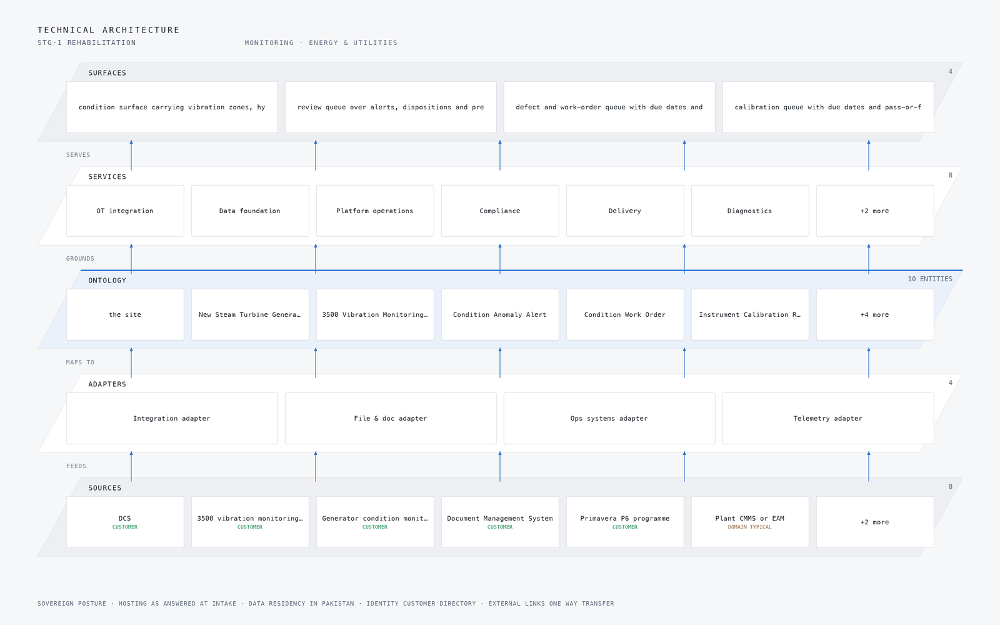
| Stage | What it is responsible for | How |
|---|---|---|
| Sources | 8 source systems already running on site | DCS, 3500 vibration monitoring rack and Generator condition monitoring systems |
| Sensing | 5 camera views plus the readings the plant already emits | Defined against the hazard |
| Adapters | One adapter per system family, never per system | 4 families mapping every source into the object model |
| Object model | 10 objects and the typed links between them | The site, New Steam Turbine Generator (280 MW, 20 kV hydrogen-cooled), 3500 Vibration Monitoring Rack and Condition Anomaly Alert |
| Inference | Detection where the reading is made, reasoning where the context lives | MOMENT-1 and IBM Granite 4.2 8B |
| Capabilities | 8 capabilities built on the one model | One per workstream of the agreed baseline |
| Surfaces | 4 surfaces the operator's own people open | Overview, Chat and Scope Room |
The condition object model
The platform does not store turbine telemetry as documents in a basket. It holds ten object types taken from the object model this engagement builds for the operator, and the design draws them as a graph. The condition-bearing assets, the rehabilitated STG-1 and the new 280 MW 20 kV hydrogen-cooled STG, sit at the centre. Around them sit the 3500 Vibration Monitoring Rack, Condition Anomaly Alert, Condition Work Order, Instrument Calibration Record, Commissioning and Performance Test Record, the Shift Operator and the Warranty Engineer, and an STG-1 Availability figure derived from the plant's real-time data. The links between these objects are typed, so an alert is linked to the channel that raised it, the channel to the calibration record that proves it was trustworthy, and the alert to the work order and the test record that close it out.
This is what a query can reach that a document store cannot. Because the links carry types, the platform can answer a question across objects in one traversal: show every vibration anomaly on STG-1 since the rehabilitation, with the calibration state of each channel at the time it fired, and the work order and warranty engineer now attached. In a document store that question becomes application code that joins loose records by hand, and the joins rot.
Figure 5 shows the objects and the typed links between them. Figure 6 shows the same system drawn component by component, with the hosting posture underneath: hosting as answered at intake, data residency in Pakistan, and identity held by the customer. The ontology is also the contract the rest of the design codes against. The eight services ground their outputs in these objects, and the four surfaces the operator's people open read from nothing else, so a new source or a new surface does not change what an alert means.
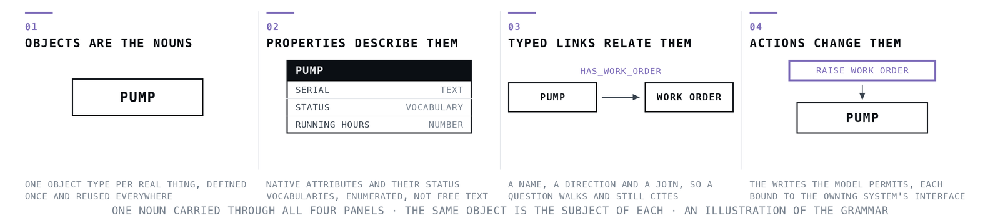
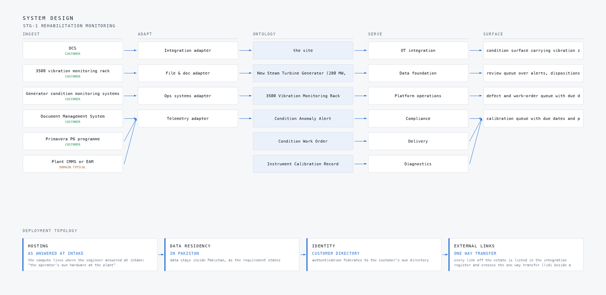
{
"id": "anomaly-alert",
"label": "Condition Anomaly Alert",
"kind": "event",
"anchored_in": "Hyper Ontology",
"properties": [
"source channel and KKS tag",
"trigger threshold or model",
"severity (ISO 20816 zone)",
"prescribed action",
"acknowledgement timestamps"
],
"status_vocabulary": [
"raised",
"acknowledged",
"in review",
"prescribed",
"closed",
"false positive"
],
"linked_to": [
{
"to": "steam-turbine-16",
"label": "the site"
},
{
"to": "stg",
"label": "New Steam Turbine Generator (280 MW, 20 kV hydrogen-cooled)"
},
{
"to": "vibration-rack",
"label": "3500 Vibration Monitoring Rack"
},
{
"to": "work-order",
"label": "Condition Work Order"
}
]
}Ingestion and the one-way event path
Eight named sources feed this platform: the upgraded plant DCS, the rehabilitated 3500 vibration monitoring rack, the new generator's rotor winding short-circuit on-line detection device and hydrogen leakage detectors, the fire detection instruments on the turbine bearing areas, the transformer diagnostic records, the contract Document Management System, and the Primavera P6 programme. Four adapter families map them, and the adapter tier is responsible for turning each source's native protocol and naming into instances of the object model, so nothing downstream knows that a vibration channel arrived as an OPC UA node and a test report arrived as a document.
The boundary hop is the one the design is most deliberate about. The DCS is read through a one-way OPC UA path: a hardware one-way egress device with a DMZ OPC UA collector, so the platform reads process, alarm and vibration context and can never write back, and the existing trip philosophy is untouched. The signed zone-and-conduit diagram for this path is a phase one deliverable, and the NEPRA Security of IT and OT Regulations 2022 require the firewalls and separation it documents. Timestamps come from a common time reference, a PTP grandmaster running linuxptp, so a vibration sample, a DCS alarm and a camera frame can be ordered against one another.
The streaming layer is responsible for the curated time-series layer: it receives adapter output, keeps the unit-checked series the anomaly models consume, and separates channel health signals from process alarms so a dead sensor is never mistaken for a sick bearing. Figure 7 shows how data moves, each named source into the adapter family that maps it, the adapters into the one ontology core, and the core out to the surfaces a person opens. Figure 8 shows the eight named systems mapped through the four adapter families, each row carrying its provenance class, customer or domain-typical, because a domain-typical source such as the plant CMMS carries no commitment until it is confirmed with the operator.
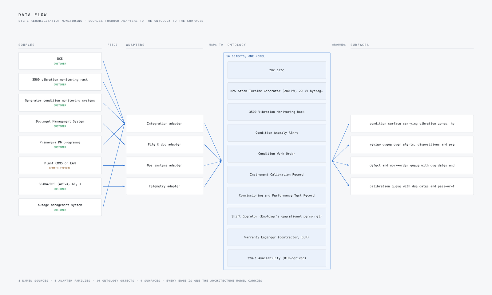
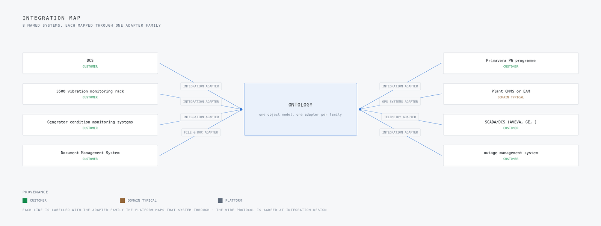
Inference at the plant edge
Every tier of this design runs on the operator's own hardware inside the plant perimeter. Pakistan has no hyperscaler region, so no managed cloud service is assumed anywhere, and the plant sits roughly 600 km from the port, so spares and model updates arrive on the site's own import cycle. The inference host is a 48 GB PCIe inference GPU class card on ruggedised edge servers, fed by hardened industrial switches, and the network boundary is crossed by nothing: telemetry, models and alerts stay on plant, and the only scheduled crossing is the mirror-archive delivery that carries updates inward on a controlled cadence.
The latency budget follows the two-loop discipline the domain brief set. The fast loop is the anomaly detection on vibration, hydrogen, winding and process telemetry, which must classify a developing excursion and raise a severity-ranked alert with a prescribed action to the shift operator faster than the operator's own scan of the DCS would. The slow loop is the engineer's review queue, where diagnostic notes and test-report drafts wait in the Document Management System for the warranty engineer during the defect liability period. Both loops run on the same site card, which is why the model choice in the next section is sized to one card rather than a cluster.
Figure 9 shows the hero workflow end to end: a bearing vibration excursion to Zone C forcing a turbine trip, from the reading that carries it to the recovery written back to the ledger. At steady state the design holds STG-1 bearing housing vibration at its nominal 2.3 mm/s RMS, and the staged fault drives it to 6.21 mm/s RMS with the asset named and ringed. Figure 10 shows the camera wall at that moment, four feeds with the detections drawn on them and the event stream alongside. When the link or the power is not there, the platform does not go quiet. It reports through positive heartbeat and freshness indicators, with tested degraded modes on the operator surface, so its own failure is visible rather than silent.
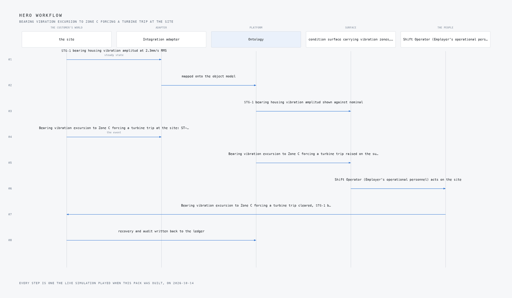
Two models, one card
The design runs two models, and both are pretrained open-weight models needing no training run, which is itself a constraint of the site: with the plant roughly 600 km from the port and updates arriving on the import cycle, a design that required a supervised training run on recovered history would be a design that could not be maintained. Figure 11 shows the three-layer stack these two models sit in.
The first model is MOMENT-1, an MIT-licensed open time-series foundation model that performs anomaly detection and classification zero-shot from one set of weights. It watches vibration, hydrogen, winding and process telemetry. We chose it over the Apache-licensed forecasters because this design needs anomaly detection, not forecasting alone, and because it is small enough to run on the 48 GB-class site card alongside everything else. The second is IBM Granite 4.2 8B, Apache-2.0 with an enterprise vendor behind it, which drafts the diagnostic notes and test reports the warranty engineer reviews. It was chosen over Qwen3.8 to 27B as the smaller, licence-clean fit for the same card, with real KV cache headroom left over.
The licences are a design constraint, not a footnote. The NEPRA Security of IT and OT Regulations 2022 bind this platform to the operator's own hardware and audit trail, so every weight set on the card must be redistributable, auditable and updatable through the mirror-archive unit of change control. Both models were verified as available under their stated licences before the design was written, and neither requires a licence key that phones home. The table below carries the full set of choices, the role each model holds and the licence it carries.
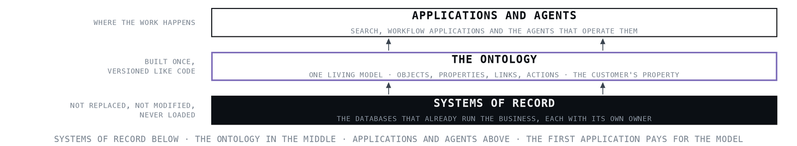
| The choice | What was picked | Why here |
|---|---|---|
| Anomaly detection over vibration, hydrogen, winding and process telemetry | MOMENT-1, licence MIT | An MIT open time-series foundation model doing anomaly detection and classification zero-shot from one weights set, small enough for the 48 GB-class site card, chosen over the Apache forecasters because this design needs anomaly detection, not forecasting alone. |
| Diagnostic note and test-report drafting for engineer review | IBM Granite 4.2 8B, licence Apache-2.0 | Apache-2.0 with an enterprise vendor behind it, fits one site card with real KV headroom; chosen over Qwen3.8 to 27B as the smaller, licence-clean fit for the 48 GB-class envelope. |
| The equipment it runs on | 48 GB PCIe Inference GPU Class, Edge Accelerator Classes, Industrial Switch Selection, PTP Grandmaster Open Time Card linuxptp | The hardware shelf set the classes: 48 GB PCIe inference class for the site card, ruggedised edge servers, hardened industrial switches, a PTP grandmaster for the specification's common time reference, and a one-way egress path for the DCS read. |
| What watches the site | 5 cameras, wide, close, control | The plan names these views for this site |
What degrades, and what must not
The design treats its own failure modes as first-class requirements, because a monitoring platform that fails silently is worse than one that is not installed. The 2021 Callide C4 failure is the shape of the risk: the official investigation report records a piece of rotor shaft weighing more than two tonnes thrown five metres across the turbine hall. Nothing in this design assumes an operator will catch that with a round of the plant.
The named failures and their answers are as follows. If the DCS read path is built as a direct control-network connection it can degrade plant operations, so the design puts a hardware one-way egress device with a DMZ OPC UA collector in the path and reads the DCS without ever writing to it, preserving the existing trip philosophy. If recovered pre-fire condition history is too sparse to baseline on, threshold tuning would quietly rest on sand, so the migration report states recovered-versus-fresh per channel and phase two thresholds tune only on channels with provable history. If alert flooding trains operators to ignore the platform, it fails in the worst way, so the design carries a gate of 2 false alerts per week, curated unit-checked series, and channel health separated from process alarms. If the audit trail is retrofitted, the five-year log and quarterly PowerCERT duties are breached, so tamper-evident logs are wired from phase one.
What must never degrade is the plant's own protection: the platform reads, the trip philosophy decides. The table below carries the full set of failure modes, what degrades in each, and what the design holds fixed.
| What fails | What the design does |
|---|---|
| The DCS read path degrades plant operations if built as a direct control-network connection. | Hardware one-way egress with a DMZ OPC UA collector; signed zone-and-conduit diagram as a phase one deliverable. |
| Recovered pre-fire condition history may be too sparse to baseline on, quietly undermining threshold tuning. | Migration report states recovered-versus-fresh per channel; phase two thresholds tune only on channels with provable history. |
| Alert flooding trains operators to ignore the platform. | 2 false alerts per week as a phase gate, curated unit-checked series, and channel health separated from process alarms. |
| NEPRA's five-year log and reporting duties breached if the audit trail is retrofitted. | Tamper-evident logs and the quarterly PowerCERT schedule wired from phase one. |
| Import-currency and port exposure delays spares and model updates. | Mirror-archive delivery as the unit of change control on a scheduled cadence; spares sized for a long import gap per the Thar precedent. |
| The platform's own failure is invisible if it only reports exceptions. | Positive heartbeat, freshness indicator and tested degraded modes on the operator surface. |
How the design was reasoned
The method ran in layers, and the gaps shaped the design as much as the findings. The domain brief was the primary input: it supplied the asset-to-alert-to-work-order pattern, the one-way DCS read rule and the two-loop latency discipline, and its pitfalls P1, P2 and P3 shaped the OT boundary, the curated time-series layer and the DMS write-back. No reference architecture was assigned to this domain, so the design proceeds on the brief alone, stated as such rather than dressed up. From published work, Azure's Industrial IoT OPC UA architecture contributed only its patterns, OPC UA subscriptions, imported asset models and read-only agent access, with no managed cloud assumed.
Two entries on the proven shelf were searched and neither bears on turbine condition monitoring, so the proven column came back empty, and we say so. Commercial precedent was more useful: Augury's prescriptive-alert shape and Avathon's turbine prediction, with its honest 5-of-7 catch rate, guided the alert design more than any vendor claim of completeness. The regulatory lens was checked against the NEPRA Security of IT and OT Regulations 2022 as they stand, which bound the design to domain separation, least privilege, five-year logs and quarterly PowerCERT reporting, and the 2003 blackout history drove the heartbeat and freshness requirements. The model choices were verified live against their licences. One candidate, redhat, ai-disconnected, was dropped in validation and nothing in this design stands on it. Figure 12 shows this reasoning end to end, from the ask through every research lens with what each one could see and what it cited. The table below carries the lenses.
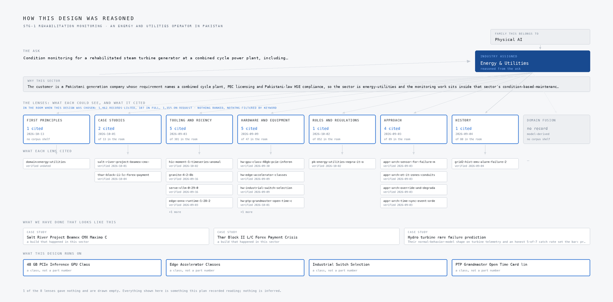
| Lens | Could see | Cited | Status |
|---|---|---|---|
| First Principles | No shelf of this kind | 1 | Contribution, 2026 to 10 to 13 |
| Case Studies | 13 in the room | 2 | Contribution, 2026 to 10 to 01 |
| Tooling and Recency | 381 in the room | 5 | Contribution, 2026 to 09 to 03 |
| Hardware and Equipment | 47 in the room | 5 | Contribution, 2026 to 09 to 09 |
| Rules and Regulations | 852 in the room | 1 | Contribution, 2026 to 10 to 02 |
| Approach | 89 in the room | 4 | Contribution, 2026 to 09 to 03 |
| History | 80 in the room | 1 | Contribution, 2026 to 09 to 04 |
| Domain Fusion | No shelf of this kind | 0 | Gap, model-derived |
Evaluation and rollout
Nothing in this design has been measured, and this section is written in the future tense deliberately. The delivery plan runs in three phases: phase one with nine items, phase two with four, and phase three with two, and each phase closes on a gate rather than a demonstration. Phase one's gate includes the signed zone-and-conduit diagram for the DCS read path and tamper-evident logging wired to the five-year NEPRA schedule from the first day, because these cannot be retrofitted. Phase two's gate includes the migration report stating recovered-versus-fresh history per channel, and thresholds tuned only on channels with provable history.
What the plan would measure is the quantity the plant already understands: STG-1 bearing housing vibration amplitude in mm/s RMS, with a nominal of 2.3 and a Zone C breach at 6.21 that forces a turbine trip. Around that primary signal, the gates would measure the alert quality the operators actually feel, held to 2 false alerts per week, and the platform's own visibility through positive heartbeat and freshness indicators. Commissioning and performance test records and instrument calibration records land in the Document Management System, so the Employer and the Engineer audit the same evidence the platform reasons over, and condition due dates reconcile with the Primavera P6 programme.
Figure 13 shows the coverage matrix, the requirement items against where the design answers them. Figure 14 shows the delivery timeline across the three phases with the gates marked. The intent is that a phase cannot be declared complete on the strength of a working demo; the gate is a number or a signed artefact, and the number is one the operator's own instrumenting would confirm.
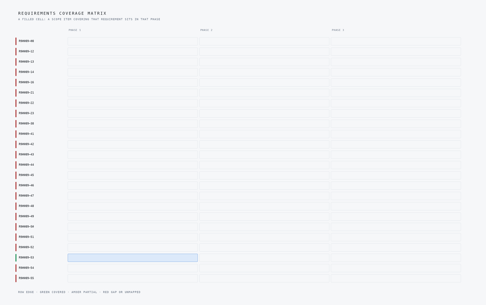
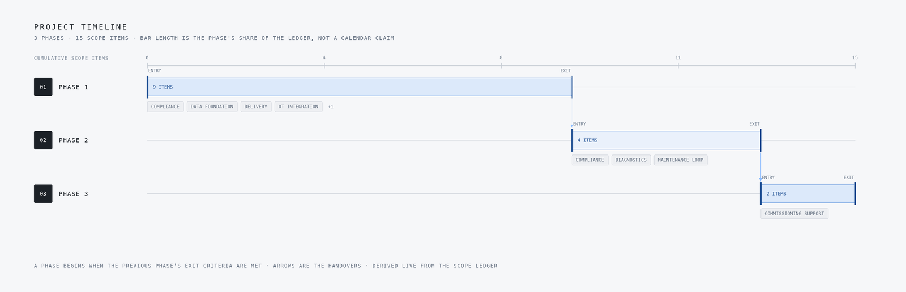
Lessons learned
Four lessons came out of writing this design, and they generalise beyond this plant to any condition-monitoring build inside a regulated OT perimeter. They are listed below as their own headed points.
One-way egress before clever analytics
The DCS read path was our first design risk, because a direct control-network connection degrades plant operations. We settled on hardware one-way egress into a DMZ OPC UA collector, with a signed zone-and-conduit diagram as a phase one deliverable. A condition monitoring system that can touch the trip philosophy is worth less than one that cannot.
Licence and fit before model size
We chose MOMENT-1, an MIT-licensed time-series foundation model, for anomaly detection because it runs zero-shot on a 48 GB-class site card, and IBM Granite 4.2 8B under Apache-2.0 for report drafting. The larger forecaster alternatives were rejected on licence cleanliness and memory envelope, not accuracy claims. Check what fits the card and the contract before comparing leaderboards.
Tune thresholds only on provable history
Recovered pre-fire condition history may be too sparse to baseline on, which quietly undermines every threshold downstream. The design requires a migration report stating recovered-versus-fresh per channel, and phase two thresholds tune only on channels with provable history. Write the sparsity down before you calibrate against it.
Alert budget, heartbeat and the watched watcher
Alert flooding trains operators to ignore the platform, so the design carries a gate of 2 false alerts per week and separates channel health from process alarms. The 2003 blackout history pushed us further: positive heartbeat and freshness indicators on the operator surface, so the platform's own failure is visible. A system that only reports exceptions fails silently.
Wire compliance in phase one, not later
NEPRA's IT/OT Security Regulations 2022 demand five years of tamper-evident logs and quarterly PowerCERT reporting, and retrofitting that trail is a breach waiting to happen. We wired the logs and the reporting schedule from phase one alongside the functional scope. Regulatory duties are architecture inputs, not paperwork after go-live.
What is still open
Four questions could not be closed from the requirement, and the design states each one rather than papering over it. The first is fusion: no reference architecture was assigned to this domain, so the domain brief is the only fusion input and the design proceeds on it alone. Settling it would either confirm the asset-to-alert-to-work-order pattern or pull in a published architecture with its own defaults. The second is the sovereignty posture, which the requirement does not state, so nothing in this design assumes one; fixing it would settle where the mirror-archive master lives and who signs the model updates. The third is the plant CMMS or EAM, which is domain-typical and not named in the requirement, so it is to be confirmed with the operator and carries no price weight until it is. The fourth is the agentic work surface, which is offered and not committed, pending the engineer's confirmation; confirming it would add a fifth surface and change the review loop's shape. The table below carries the open questions and what settling each one would change.
| What the design needed | What the project holds |
|---|---|
| Domain Fusion | No reference architecture was assigned, so the domain brief is the only fusion input; the design proceeds on it alone, stated as such. |
| The sovereignty posture it runs under | The requirement does not state it, so nothing in this design assumes one |
Conclusion
The design is a condition-monitoring and diagnostics platform for the rehabilitated STG-1 and the new 280 MW generator at the operator's combined cycle plant, built as eight sources feeding four adapters into one ontology of ten objects, grounded by eight services and opened through four surfaces. It reads the upgraded DCS, the restored 3500 rack and the generator's winding and hydrogen detection through a one-way OPC UA path, turns anomalies into severity-ranked alerts with prescribed actions, and runs entirely on the operator's own hardware under the NEPRA Security of IT and OT Regulations 2022. Two pretrained open-weight models, MOMENT-1 and IBM Granite 4.2 8B, do the detection and the drafting, sized to a single 48 GB site card with no training run and no cloud.
Running it somewhere else would take three things. A domain brief for the new asset class, since the design inherits its asset-to-alert-to-work-order pattern and latency discipline from the brief rather than from a reference architecture. A regulatory pass, since the NEPRA duties that shaped the logging, the one-way path and the reporting cadence are jurisdiction-specific. And an import-cycle answer, since the mirror-archive unit of change control and the spares sizing exist because this plant sits roughly 600 km from the port. The shape of the system, one-way reads, a typed object model, alerts with owners, survives the move; the numbers in it do not, and would need to be derived again.
What the Site Inference Host Costs Over Three Years
The design runs every tier on the operator's own hardware inside the plant perimeter: one host of the 48 GB PCIe inference GPU class on a ruggedised edge server, hardened industrial switches, a PTP grandmaster time card and a one-way egress path for the DCS read (chapter 7). This appendix prices that envelope from public list prices, dated and cited, against renting the same card from the nearest hyperscaler region. Two lines are sold only by written quotation and are named and left out of the total rather than guessed. Every number can be rerun with a written quote.
A.1 The Answer
Owning the site envelope costs about 22,500 US dollars over three years, inside a range of 21,600 to 23,400. Renting one L40S card around the clock from the nearest region costs 22,600 to 60,000 dollars over the same period, so ownership costs about the same as the deepest three-year commitment (an AWS EC2 Instance Savings Plan, all upfront, in the UAE region) and buys the switches, the time card and the power protection with it. The comparison is printed for reference only: no hyperscaler operates a region inside Pakistan, and the NEPRA Security of IT and OT Regulations 2022 bind the design to domain separation, so a rented card outside the plant would break the one-way read before it saved a dollar. Both models are open weights (MIT and Apache-2.0) and carry no licence line.
A.2 What Owning Costs
| Line | Basis | Three-year cost (USD) |
|---|---|---|
| Inference host | One 48 GB L40S-class card with its share of host, memory and power supply, priced as one eighth of an eight-card L40S server at 85,271 dollars (Newegg 2026) | 10,700 |
| Time reference | One OCP-TAP Time Card as the PTP grandmaster at 1,500 dollars (Makerfabs 2026) | 1,500 |
| Network | Two industrial managed switches at 393.25 dollars each (Nassau National Cable 2026) | 800 |
| Clean shutdown | One APC Smart-UPS 3 kVA at 2,425.00 dollars (Markertek 2026) | 2,400 |
| Equipment | 15,400 | |
| Support | 8 to 12 percent of equipment value a year (Introl 2026) | 3,700 to 5,500 |
| Power | 0.6 kW average draw for the card and its host share (an assumption: the L40S is rated at 350 W) at a power usage effectiveness of 1.6 (Uptime Institute 2025), 25,229 kWh at the industrial B3 average of 27 rupees per kWh (Dawn 2026) at 277.38 rupees to the dollar (SBP 2026) | 2,500 |
| Total | 21,600 to 23,400 |
Not in the table: the hardware data diode on the one-way egress path and the ruggedised enclosure beyond the host share, both sold by quotation; the five camera views, whose count and whether they reuse existing plant cameras are fixed at the site survey; and the DCS vendor's OPC UA server licence, which belongs to the upgraded DCS rather than to this design.
A.3 What Renting the Card Would Cost
| Option | Basis | Three-year cost (USD) |
|---|---|---|
| AWS, UAE region, on demand | g6e.xlarge, one L40S, at 2.283 dollars an hour in me-central-1 (AWS 2026a); outside Pakistan | 60,000 |
| AWS, UAE region, three-year EC2 Instance Savings Plan, all upfront | g6e.xlarge at 0.85841 dollars an hour, the deepest three-year plan in the region (AWS 2026b); outside Pakistan | 22,600 |
Egress, storage and the network link from the plant to the region are excluded, so every rented figure is a floor. Neither option satisfies the boundary the design is built on.
A.4 Sources for This Appendix
- AWS. 2026a. Amazon EC2 on-demand prices, Middle East (UAE), Linux, g6e.xlarge, as read 6 October 2026. https://aws.amazon.com/ec2/pricing/on-demand/
- AWS. 2026b. EC2 Instance Savings Plans price file, me-central-1, version 20261013035015, as read 14 October 2026. https://pricing.us-east-1.amazonaws.com/savingsPlan/v1.0/aws/AWSComputeSavingsPlan/current/region_index.json
- Dawn. 2026. NEPRA notifies new industrial tariffs. https://www.dawn.com/news/1973828
- Introl. 2026. GPU infrastructure TCO model. https://introl.com/blog/gpu-infrastructure-tco-model-5-year-enterprise-ai-deployment
- Makerfabs. 2026. OCP-TAP Time Card, read 12 October 2026. https://www.makerfabs.com/ocp-tap-time-card.html
- Markertek. 2026. APC SMT3000RM2UC Smart-UPS 3000VA, read 12 October 2026. https://www.markertek.com/product/apc-smt3000rm2uc/apc-smt3000rm2u-smart-ups-3000va-rm-2u-lcd-120v-with-smartconnec
- Nassau National Cable. 2026. Planet IGS-5225-4P2S industrial managed switch, read 12 October 2026. https://nassaunationalcable.com/products/planet-igs-5225-4p2s-industrial-full-managed-port-poe-switch
- Newegg. 2026. Supermicro SYS-421GE-TNRT-02-G1, eight L40S cards, 85,271 dollars, read 12 October 2026. https://www.newegg.com/p/N82E16859152404
- SBP. 2026. Conversion rates, 4 September 2026. https://www.sbp.org.pk
- Uptime Institute. 2025. Global Data Center Survey 2025. https://uptimeinstitute.com
References
- Callide C power station explosion: What went wrong and why the incident this post opens on
- Callide C4 incident: counting the costs the incident this post opens on
- Path to 'catastrophic failure': CS Energy reports on Callide what it costs when it goes wrong
- Case Details Burst of Steam Turbine Rotor in Nuclear the incident this post opens on
- Manual of bearing failures and repair in power plant the scale of this problem across the industry
- Root Cause Machinery Failure Analysis why this is hard to prevent
- Steam Turbine Condition Monitoring & Predictive Analytics the source for the opening fact
Acknowledgements
This design was assembled on CodeNinja Praxis, the CodeNinja Atoms platform, which read the requirement, reasoned the plan and drew every figure in this post from it. The operation it was designed for is described by class rather than named.
About the author
The CodeNinja Engineering Team, forward deployed engineers at CodeNinja, designed this system on CodeNinja Praxis, the CodeNinja Atoms platform. Every figure in this post is generated from the project’s own plan, and the operation it was designed for is described by class rather than named.